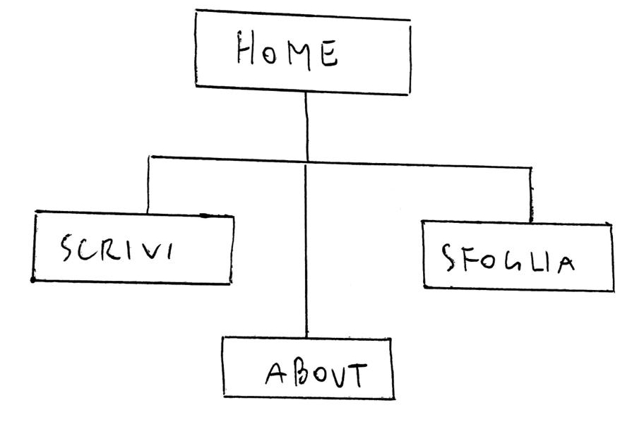
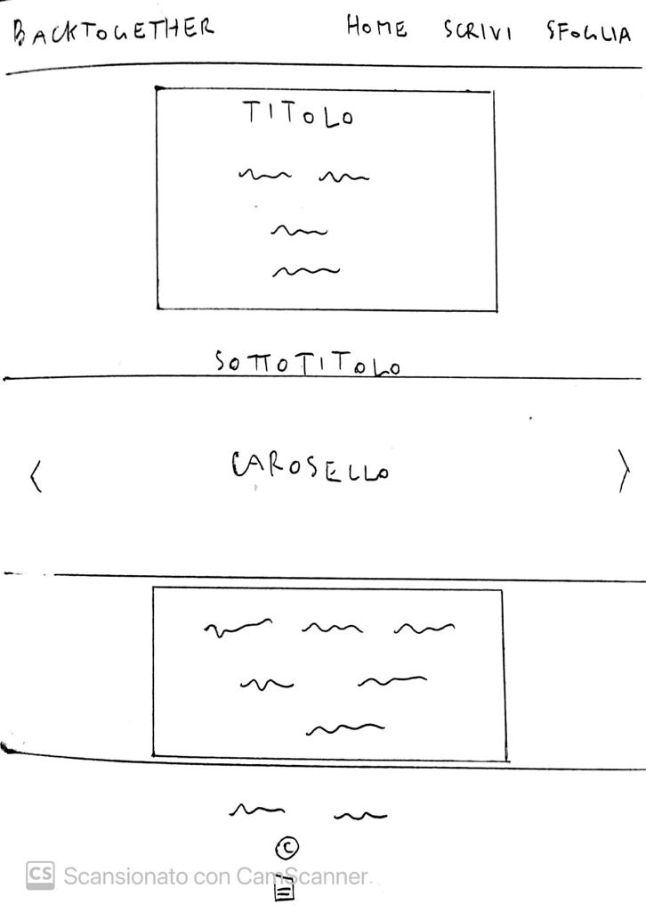
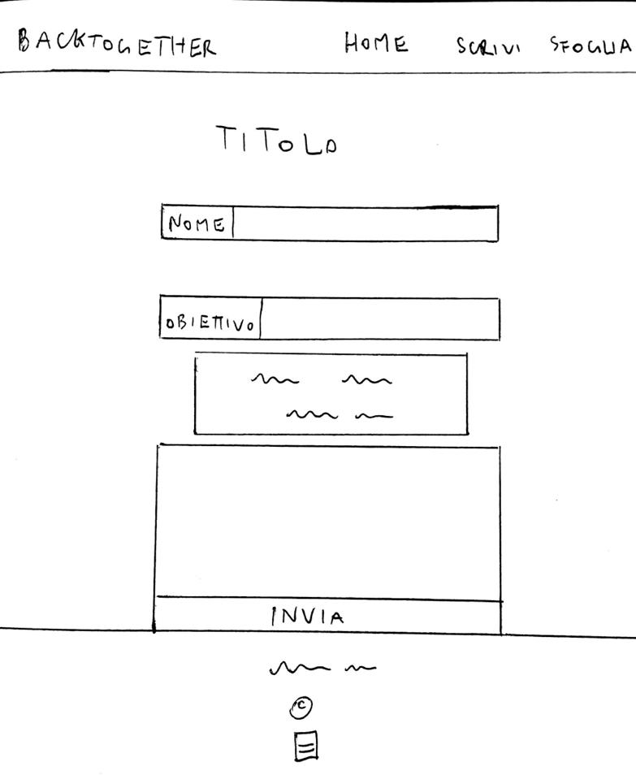
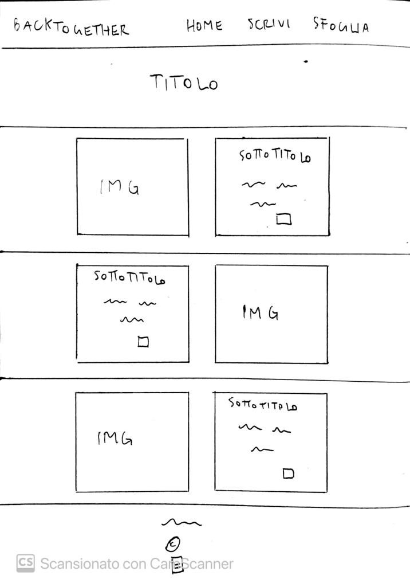

Documentazione
0. Abstract
La petizione è lo strumento più utilizzato nei Paesi democratici per far sentire la propria voce, per comunicare un problema, proporre una soluzione. Qui voglio dare l'opportunità a tutti di sognare di far tornare insieme le proprie band preferite. L'idea mi è venuta pensando a Rockin 1000, vedendo cosa si può conquistare con l'unione di tante persone. In questo modo le persone possono far sentire la propria voce e il proprio affetto alle loro ex-band preferite, creando petizioni e raccogliendo firme, o magari scoprendone altre già presenti.
1. Project Managment Plan
1.1 Obiettivi
Ho creato questo sito in maniera semplice e chiara con l’obiettivo di dare la possibilità ai fan di band sciolte di poter creare petizioni per chiedere ai gruppi di tornare insieme.
1.2 Target
Tutte le persone appassionate di musica che hanno visto un gruppo che amavano sciogliersi.
1.3 Competitors
Tra i competitrs il migliore è Change.org, il sito di petizioni più completo e organizzato, e anche quello che riscuote più successo tra i vari. Inoltre è presente anche Firmiamo.it, il quale come il precedente possiede anche canali social. Eppure nessuno dei due tratta argomenti specifici, ma è aperto a petizioni di ogni tipo.Qui invece voglio offrire un servizio riservato ad un campo più ristretto.
2. Struttura e layout
2.1 Architettura del sito
2.2 Wireframe
Home
Scrivi
Sfoglia
2.3 Look and Feel
-Grafica minimal e con pochi elementi, per avere un layout pulito ed efficace. -palette di colori vintage, ma non troppo spenti, per tenere una grafica pulita e anche un po' richiamante la nostalgia. -i font sono tutti sans-serif, per spazialità e minimalismo.-l'immagine di backround nel footer rappresenta un concerto, per collegarsi alle immagini dei gruppi che li mostrano durante i loro live.
3. Strumenti e linguaggio
3.1 Linguaggi web utilizati
HTML + CSS
3.2 Strumenti tecnologici
- SublimeText2 come text editor; - FontAwesome per le icone; - Colorhunt per le palette di colori; - Googlefont per i font; - Bootstrap per le librerie; - Github per la pubblicazione; - Google Analytics per il controllo delle visualizzazioni.
4 Communication strategy
4.1 Background
A differenza dei competitors presi in questione, Back Together è un sito più semplice e chiaro, e si rivolge solo a coloro che vogliono far partire petizioni che riguardano la musca. Invece i competitors analizzati presentano ogni varietà di petizioni, e hanno un'interfaccia più piena e ramificata , il che rende difficile potere navigare con ordine.
4.2 Obiettivi comunicativi
L'obiettivo principale di questo sito è di dare l'opportunità a tutti i fan più affezionati di creare una petizione e, aldilà del successo o meno di quest'ultima, che possano conoscere altri fan come loro e magari creare nuove community.
4.3 Traget Audience
-fascia giovane (20-30) che ha sofferto la rottura dei loro idoli adolescenziali e gruppi che ricordavano la loro infanzia. -fascia adulta in cui risiedono i veri nostalgici, che dopo avere seguito una band per tutta la cdarriera non accetta la sua fine
Il messaggio che vuole trasmettere è quello di non arrendersi e di provare a fare sentire la propria voce e il proprio affetto. L'unione di tante persone può davvero cambiare le cose.
5. Promozione
Per promuovere il sito i canali migliori sono i social media e il sistema di link. In particolare ho utilizzato stories su Instagram sul mio profilo personale e ho creato una pagina Instagram in cui pubblicizzare le petizioni già lanciate e invitare gli utenti a partecipare.
6. Valutazione dei risultati
Ho osservato le visite tramite Google Analytics e ho raccolto like e visual a post e stories su Instagram. La pagina ha superato rapidamente l'obiettivo iniziale di 20 like per post.